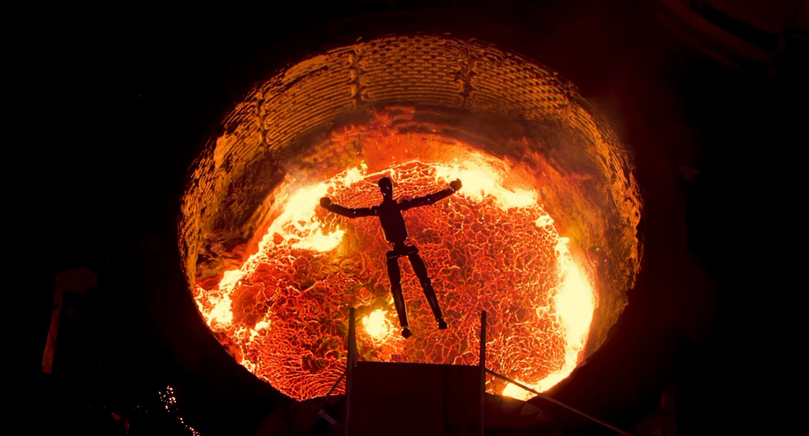
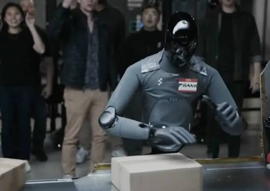
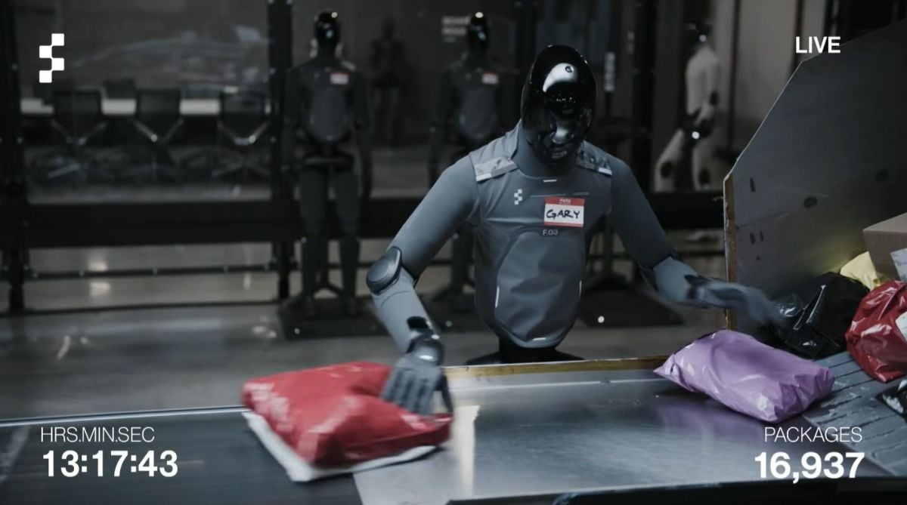
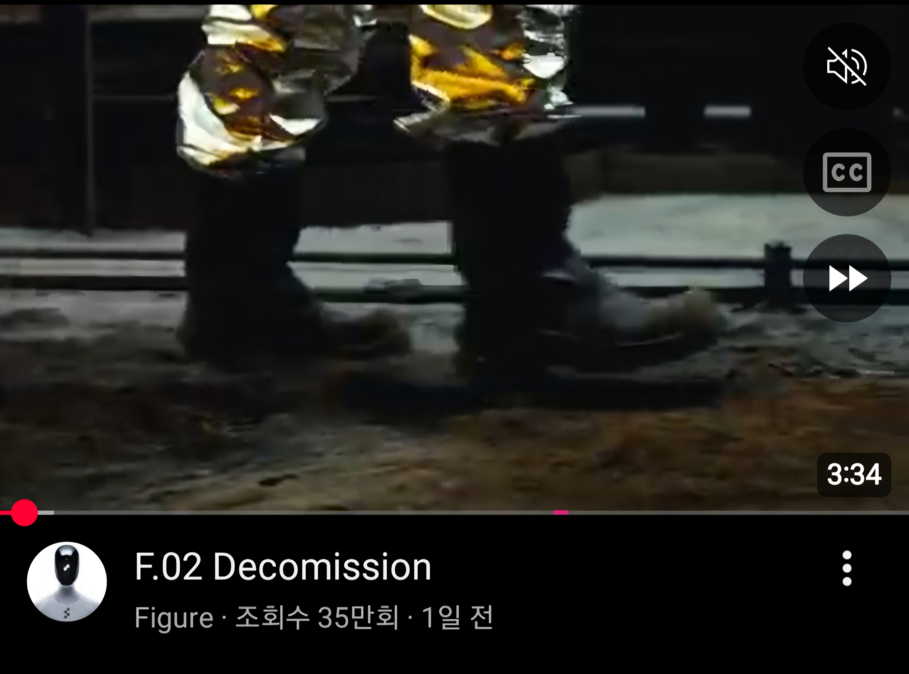

F.02 : 저주할테다 좆간!!! 최신형때문에 이몸을 버리다니!!!
라고 화려하게 퇴역식 인증한 F.02 BMW자동화 도입기체
문제는 저거 F.04모델 생산한다고 기존 모델 회수하고 폐기한거라는거


참고로 올해 5월 bot vs human 택배분류 대결에 쓰였던
프랭크 랑 게리 제식명이 F.03임
F.02가 2024년 BMW 도입 올해 퇴역(폐기) 되었는데
F.03 생산 및 도입이 2025년이었음
F.04 양산은 현재 진행중이고 도입이 2027년 예상이니...
F.03 프랭크 랑 개폐급이라던 게리 도 내년에 용광로 다이빙 할수도있음
뭐 다르게 퇴역할수는있지만

지금 업로드 하루만에 조회수 35만 달성함(...)
한줄요약 : 굳세어라 프랭크 게리 잘못하면 F.02꼴 난다
똑바로 안해? 용광로 들어가고 싶어?